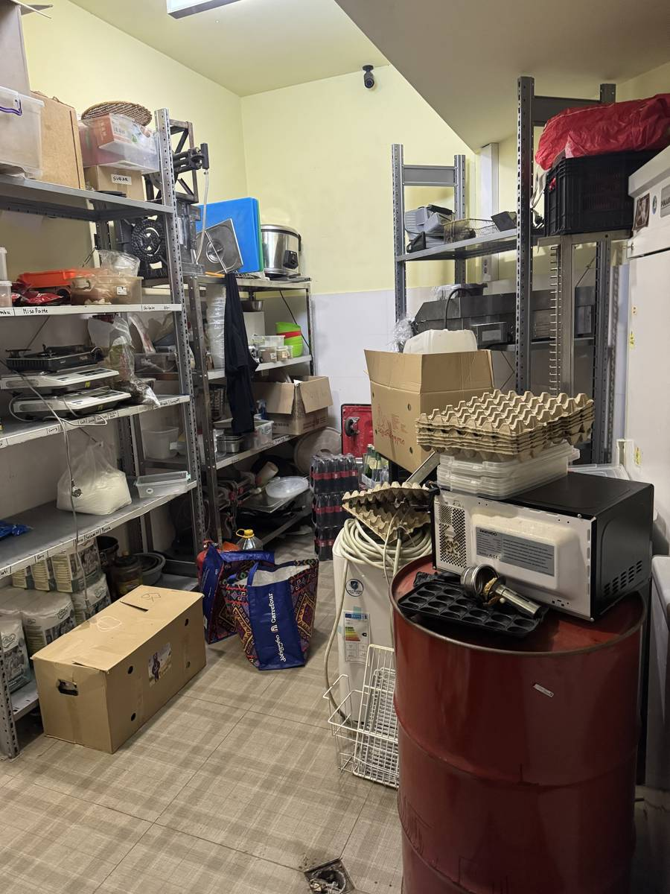
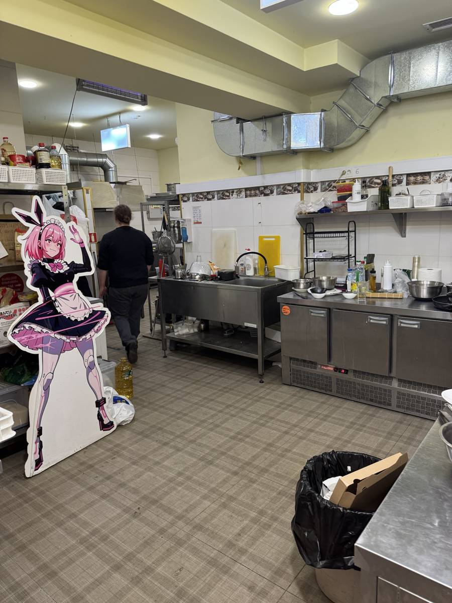
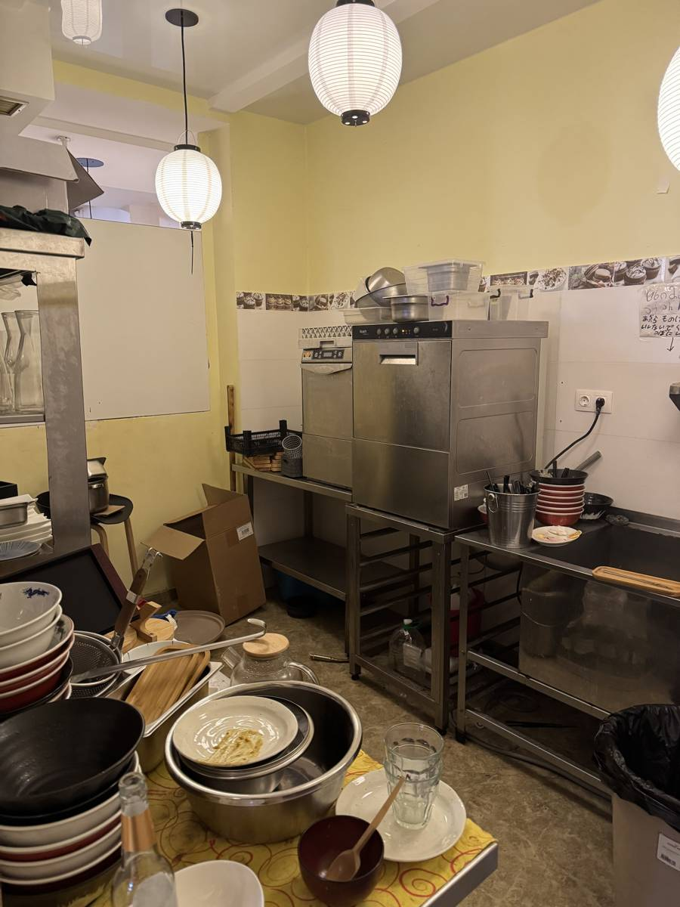
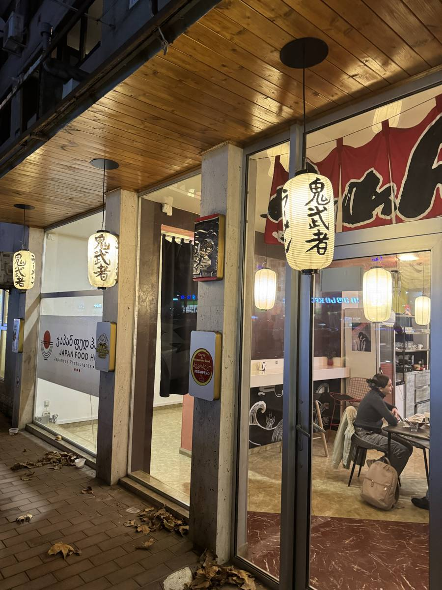
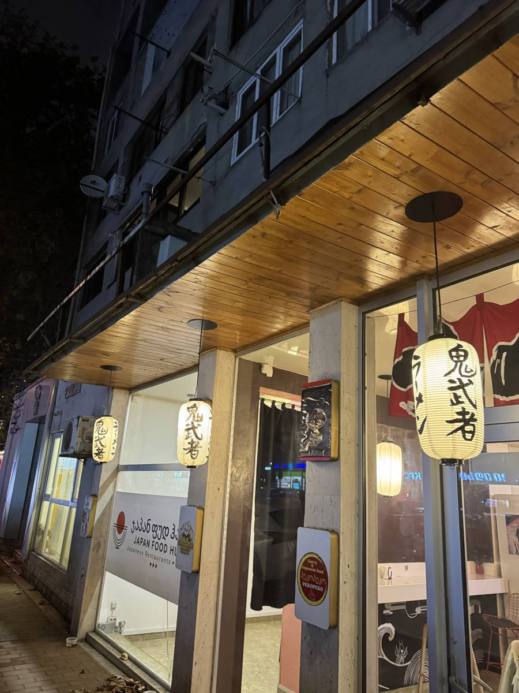
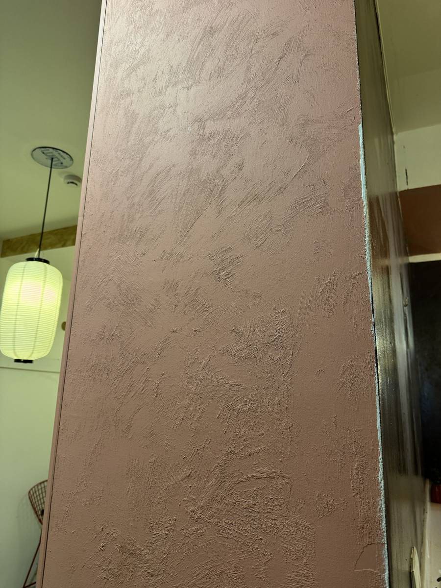
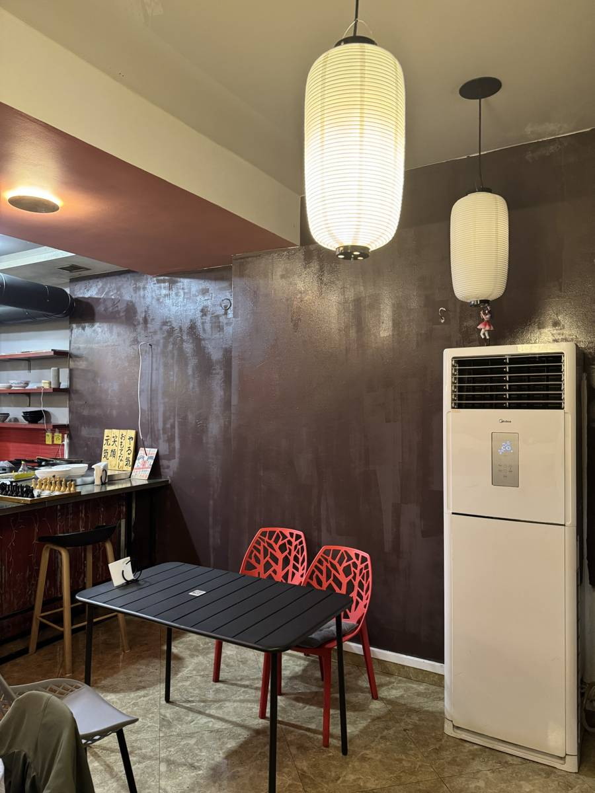
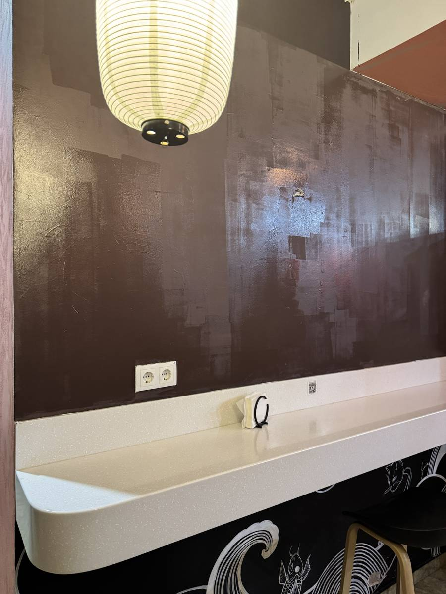
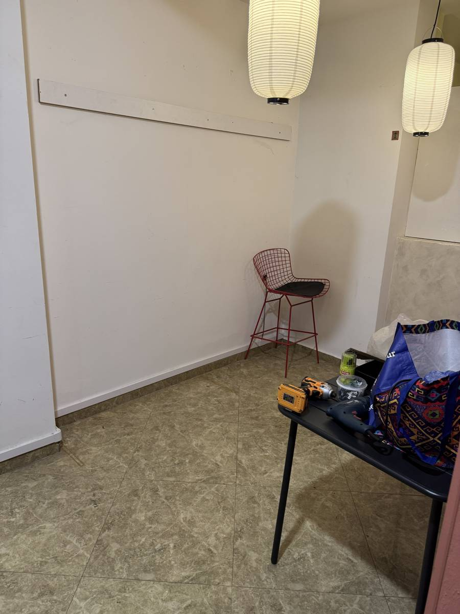
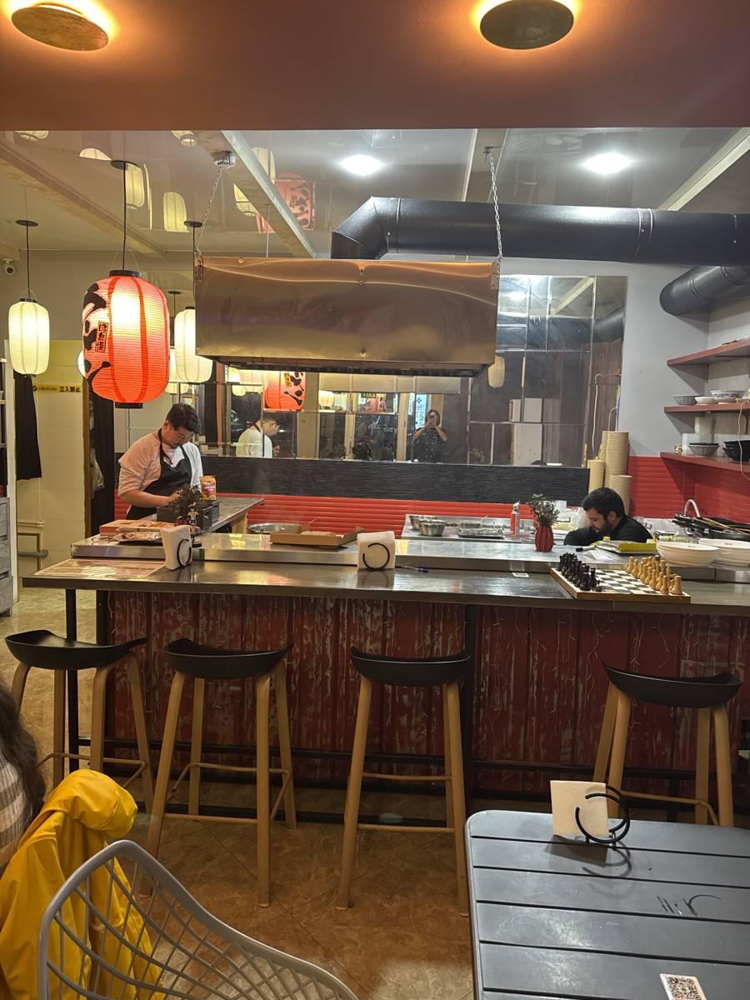

JAPAN FOOD HUB · 1 DAVIT GAMREKELI ST · TBILISI
For Daniel and team · 16 November 2026 · from Kyohei Mikami (Omurice Land)
Goal: make the restaurant feel like a small Japanese izakaya (a casual Japanese pub): warm wood, soft lantern light, more seats.
Budget: we want a low-cost finish. Please suggest the cheapest way that still looks good, and price every item separately so we can choose.
We buy ourselves: chairs, tables, lanterns, noren curtains and the sign artwork. We ask you for: moving equipment, plumbing and electrics, carpentry, walls and installing the sign.
| # | Work | Details |
|---|---|---|
| A | Move the dishwashing area | Move the dishwasher and sink to the back area (photos 2–3), and use the free space for guest seats. Includes water, drain and electric connections. |
| B | Clear unused items | Take out the things we do not use from the back storage and the empty room (photos 1, 9), and dispose of them. We will mark what to keep. |
| C | Sign | A new sign at the entrance so people can see us from the street (photos 4–5). We provide the design; please quote making and installing (wooden board or light box, with lighting). |
| D | Japanese-style walls | The brown walls look old and dirty (photos 6–8). We want a Japanese look. See the low-cost options in section 3. |
| E | More seats | Please tell us how many seats fit after A and B, using your measurements. We want to plan the table and chair layout together with you (counter seats along the wall where possible). |










Please give a price per square metre for each option, so we can choose. Options 1 and 2 are our favourites.
Thin vertical wooden slats (about 3–4 cm wide, small gaps) fixed over the old wall, stained in natural or dark wood colour. Hides the old wall without removing it.
Paint the wall off-white or beige (plaster-like look), with dark wooden strips as a frame, like a traditional Japanese wall.
Wood panel on the lower part of the wall (up to about 1 m), light paint above. Strong for a busy restaurant.
Bamboo or reed mats fixed in wooden frames on some parts of the wall, for example behind the counter.